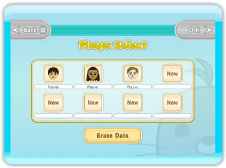
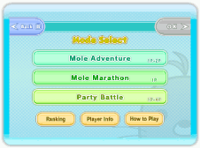
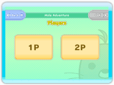
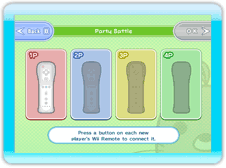

Comenzar una partida
Pulsa en la pantalla de título para acceder a la pantalla de selección de jugador. Si es la primera vez que juegas, verás una pequeña demostración de cómo se hace.

Pantalla de selección de jugador
Aquí podrás configurar los datos de tu jugador antes de acceder a la pantalla de selección de modo. Si quieres crear un jugador desde cero, selecciona una ranura marcada como "New" (Nuevo) y elige el Mii™ que quieras usar.

Pantalla de selección de modo
Selecciona el modo al que quieras jugar.
"Mole Adventure" (La aventura de los topos) (1-2 jugadores)
Golpea a los topos de toda clase que aparecerán en cada escenario. Los dos jugadores pueden jugar juntos como equipo.
"Mole Marathon" (La maratón de los topos) (1 jugador)
Un modo para un jugador en el que intentarás conseguir la mejor puntuación perdiendo el menor número de topos posible. Avanzarás cuantos más topos golpees, y los niveles serán cada vez más complicados.
"Party Battle" (Batalla por grupos) (1-4 jugadores)
Un modo de batalla para hasta 4 jugadores. Golpea el número de topos establecido antes que nadie o bien golpea a los topos de colores para ganar una ronda.
"Ranking" (Clasificación)
Consulta la clasificación de tu consola Wii y de otros jugadores de tu mismo país.
"Player Info" (Información del jugador)
Consulta tus estadísticas de juego y los títulos que has ganado.
"How to Play" (Cómo jugar)
Echa un vistazo a la demostración cuando juegues por primera vez.
Pantalla de configuración
Cuando selecciones un modo, podrás ajustar diversas opciones en esta pantalla. Estas opciones dependerán del modo que hayas elegido antes.


1. Número de jugadores
Elige cuánta gente participará en la partida. Conecta tantos Wii Remotes como sean necesarios y pulsa el botón "OK" (Aceptar). Si hay menos de cuatro jugadores en el modo "Party Battle" (Batalla por grupos), podrás elegir el número de jugadores controlados por la consola.
2. Elegir un Mii
Selecciona el Mii con el que quieres guardar la partida. No puedes guardar tu partida con un Mii invitado.
3. Seleccionar el escenario y las normas
Puedes seleccionar el escenario y las normas que quieras. Las opciones disponibles dependerán del modo que hayas elegido, así que consulta las instrucciones específicas de cada uno de ellos.
4. Confirmar las opciones
Las opciones que hayas elegido aparecerán en pantalla. Pulsa el botón "Start" (Comenzar) para empezar la partida. Si quieres corregir algo, pulsa el botón "Back" (Atrás) para volver a la pantalla anterior.